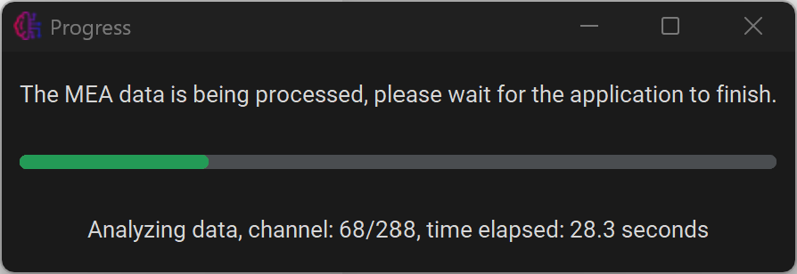

Analyse Single File
Set parameters
First, navigate to the “Set Parameters” tab to alter analysis parameters.

From here it is possible to alter the parameters or import settings from a previous experiment. To save the parameters, press Save parameters and return.
Restore default parameters can be used to restore all parameters to the default values.
Parameters from previous experiments can be loaded using Import parameters. Every experiment will generate a file called parameters.json in the output folder. These files can be selected to copy the parameters to the current analysis.
For more information about each parameter, see Parameters.
Analyse file
In the main menu, select Process single file.

First, press Select a file and select the file you want to process. Next, insert the sampling rate of the experiment, and the amount of electrode that each well contains. Then, press Start Analysis.

A new window will appear, keeping the user up to date with the progress. The analysis can be cancelled by closing this window. This might not be instant.
Axion .raw files
Axion .raw files can unfortunately not be accessed using python, so they will first have to be converted using MATLAB using our custom script available on GitHub. For more information, see Convert Axion data.
Rechunking
If your file has not been rechunked/compressed yet, the application will first rechunk the file, creating a rechunked copy, and then process the rechunked file. Files can also be rechunked manually. For more information about why files are rechunked, see Compress/Rechunk files.